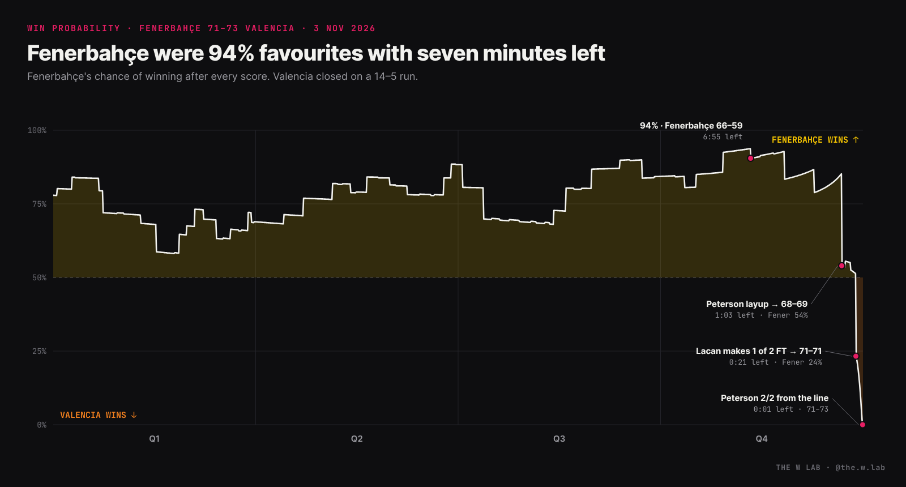
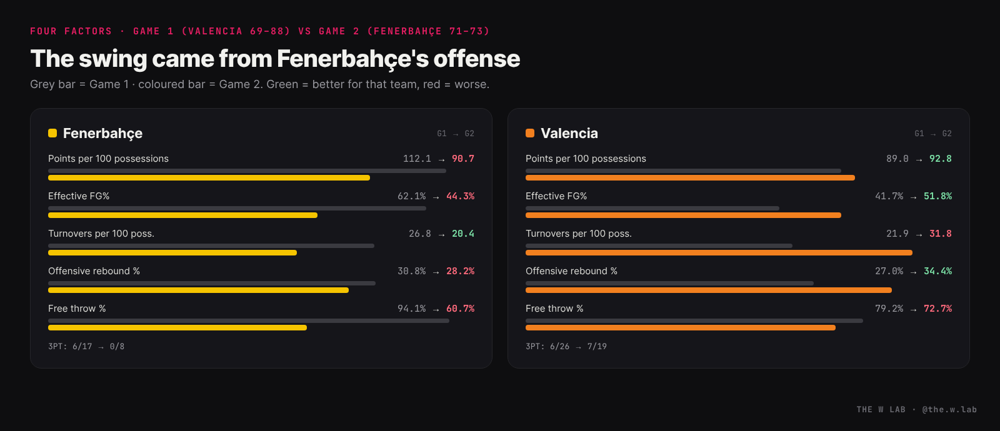
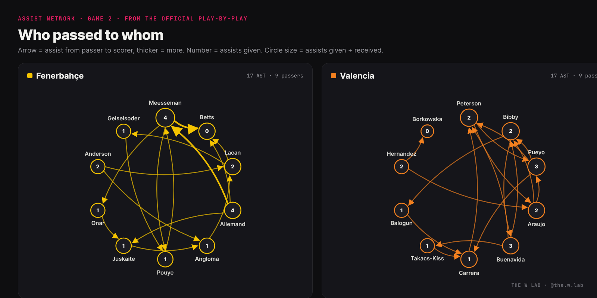
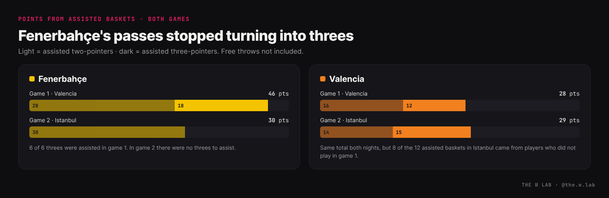
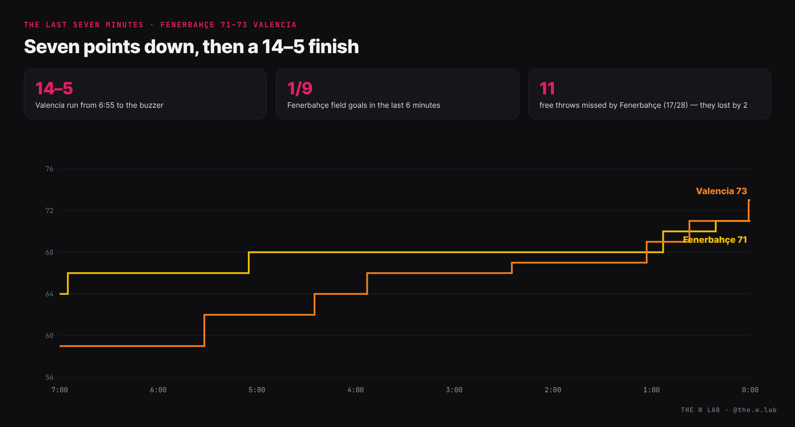

At a glance
On 14 October, Fenerbahçe went to the Roig Arena and beat Valencia 88–69. They led by 27–12 after ten minutes and by as many as 26. The lead changed hands once all night.
On 3 November, in Istanbul, Valencia won 73–71. The lead changed hands 15 times, the score was tied nine times, and Alexis Peterson decided it from the free-throw line with one second left. It was Valencia's first win over the reigning European champions after ten straight defeats, according to Solobasket.
Same two teams, three weeks apart, and a 21-point swing. I pulled the official play-by-play and box score of both games from FIBA to find out where it came from.
The game Fenerbahçe had already won

A win probability model turns the score and the clock into a single number: how likely each team is to win from here. Fenerbahçe started as favourites at home, around 78%, and were above 50% for almost the whole game.
The peak came with 6:55 left. Fenerbahçe led 66–59 and the model gave them a 94% chance. From there, Valencia scored 14 points and Fenerbahçe 5.
- 1:03 left — Peterson's driving layup put Valencia ahead 69–68 and dropped Fenerbahçe to about 54%.
- 0:21 left — Leila Lacan made one of two free throws to tie it at 71. With both, Fenerbahçe would have led by one with Valencia needing a basket, about 55% in the model. With one, it was a tie and Valencia's ball: 24%. That single miss was worth around 30 points of win probability.
- 0:01 left — Peterson drew the foul and made both. Laura Juskaite's heave from the backcourt missed.
Where the 21 points went: the Four Factors
Dean Oliver's Four Factors split any game into four things: shooting (effective FG%), turnovers, offensive rebounds and free throws. Both games had almost the same pace — about 78 possessions each — so the totals compare cleanly.

| FENER G1 | FENER G2 | VBC G1 | VBC G2 | |
|---|---|---|---|---|
| Points per 100 possessions | 112.1 | 90.7 | 89.0 | 92.8 |
| Effective FG% | 62.1% | 44.3% | 41.7% | 51.8% |
| Turnovers per 100 poss. | 26.8 | 20.4 | 21.9 | 31.8 |
| Offensive rebound % | 30.8% | 28.2% | 27.0% | 34.4% |
| Free throws | 16/17 | 17/28 | 19/24 | 16/22 |
| Three-pointers | 6/17 | 0/8 | 6/26 | 7/19 |
The headline is on the left side of the table. In Valencia, Fenerbahçe were +23 per 100 possessions. In Istanbul they were −2. That is a 25-point swing, and 21 of those 25 points came from Fenerbahçe's offense dropping from 112 to 91. Valencia's own attack only improved from 89 to 93.
- Zero threes. Fenerbahçe went 0 for 8 from beyond the arc after 6 of 17 in Valencia. They also took half as many.
- The paint got harder. They still scored 48 points in the paint, but their two-point percentage fell from 66% (27/41) to 51% (27/53).
- Free throws. 16 of 17 in Valencia, 17 of 28 in Istanbul — 11 misses in a game they lost by two. Even at an ordinary 75% they would have scored four more points.
And Valencia won while turning the ball over 25 times — almost one in three possessions, much worse than in the first game. They survived it with better shooting (eFG 41.7% → 51.8%, threes 6/26 → 7/19) and more second chances: an offensive rebound rate of 34% and 13 second-chance points.
A different Valencia
Part of the answer is simply who played. Four of the eleven Valencia players used in Istanbul did not play in the first game: Raquel Carrera, Chloe Bibby, Elena Buenavida and Isabel Hernandez. Carrera had 11 rebounds and went 7 of 10 from the line; Bibby made the free throws that gave Valencia a 71–70 lead with 37 seconds left. On the other side, Olcay Çakır Turgut, who scored 14 points off the bench in Valencia, did not play in Istanbul.
The other part is Alexis Peterson: 7 points on 1 of 7 shooting in game one, 21 points on 8 of 10 in game two, including the go-ahead layup and the winning free throws.
The players who decided it
Game 2 lines from the official box score.


Photos and logos: FIBA.
Who passed to whom
The FIBA play-by-play links every assist to the basket it created. That lets us draw each team as a passing network and, more usefully, compare the same network across the two games.

Fenerbahçe: same hubs, no threes
Fenerbahçe's ball movement barely changed. Emma Meesseman and Julie Allemand were the hubs in both games: 10 of the 21 assists in Valencia, 8 of the 17 in Istanbul. More than half of their field goals came off a pass both nights (61% and 56%).
What changed is where those passes ended. In Valencia, all six of their threes were assisted, three of them by Meesseman. In Istanbul, Fenerbahçe made no threes at all, so every assist was a two-pointer. Lauren Betts finished the most of them (four), close to the basket. Points from assisted baskets fell from 46 to 30.

Valencia took the threes away, not the passing. Fenerbahçe attempted only eight threes in Istanbul, after 17 in Valencia.
Valencia: new passers, same output
Valencia scored almost exactly the same from assisted baskets in both games (28 and 29 points). The passers were different. In Valencia, Leticia Romero led the team with four assists on field goals; she did not play in Istanbul. There, 8 of Valencia's 12 assisted baskets were set up by players who had not played in game one: Elena Buenavida (3), Chloe Bibby (2), Isabel Hernandez (2) and Raquel Carrera (1).
Nobody on Valencia had more than three assists, and five of their seven threes came off a pass, including the Balogun three that started the comeback (from Bibby) and Araujo's two (from Hernandez and Peterson).
The last seven minutes

Fenerbahçe scored at 6:55 to lead 66–59 and called timeout at 5:59. From that timeout to the buzzer, I went through every possession in the play-by-play.
Each box is one possession, in order, from Fenerbahçe's timeout at 5:59. A possession ends on a made basket or final free throw, a defensive rebound or a turnover.
- 13 possessions, 5 points. Fenerbahçe scored 0.38 points per possession, against 1.17 for Valencia (12 possessions, 14 points). Over the whole game both teams were around 0.9.
- One field goal in nine attempts. The only basket was a Lauren Betts putback at 5:05. The other eight shots missed, including three layups (Allemand at 4:33, Betts at 3:18 and 1:33) and a Lacan jumper blocked by Elizabeth Balogun.
- Three turnovers each, very different results. Both teams gave the ball away three times. Valencia scored 6 points off Fenerbahçe's (Balogun's three, Bibby's jumper, a Carrera free throw). Fenerbahçe scored 0 off Valencia's: two of them led to missed layups, the third to a missed Anderson three.
- Timeouts didn't help. Fenerbahçe called three in the last six minutes. The first possession after the 5:59 timeout was a Betts turnover; after the 3:50 timeout, Lacan was blocked. Only the last one, at 1:02, produced points: Laura Juskaite's two free throws for a 70–69 lead.
- Valencia lived at the rim and the line. Their last 14 points: one three, three layups or short jumpers, and five of seven free throws. Raquel Carrera, Chloe Bibby and Alexis Peterson all got to the line in the last two and a half minutes.
Emma Meesseman, Fenerbahçe's main passer, didn't take a shot in that stretch. The last shots went to Betts (three), Anderson (two), Lacan (two), Allemand and Juskaite.
What this doesn't tell us
- Two games are two games. Missed free throws and cold shooting swing a lot from night to night. This is a description of what happened, not a prediction for the next meeting.
- The win probability model is simple. It only knows the score, the time left and who has the ball after each score, plus a pre-game edge. It does not know who is on the floor, fouls or timeouts. Treat the percentages as a guide.
- Roster changes. I don't know why players missed either game. The point is only that the two Valencias were not the same team.
Methodology
- Data: official play-by-play and box score of both games from FIBA (EuroLeague Women 2026-27, Group C: game 135186, Valencia–Fenerbahçe, 14 Oct; game 135192, Fenerbahçe–Valencia, 3 Nov).
- Possessions = FGA − offensive rebounds + turnovers + 0.44 × FTA. Points per 100 possessions = 100 × points ÷ possessions.
- Four Factors: eFG% = (FGM + 0.5 × 3PM) ÷ FGA; turnovers per 100 possessions; ORB% = offensive rebounds ÷ (own offensive + opponent defensive rebounds); free throws made and attempted.
- Win probability: a Brownian-motion model in the style of Hal Stern (1994). Fenerbahçe's chance = Φ((margin + μ·τ + possession) ÷ (σ·√τ)), where τ is the share of the game left, μ = +10 points (pre-game edge for the home team that won by 19 three weeks earlier), σ = 13 points, and the team with the ball gets +0.95 points. With no pre-game edge (μ = 0), the peak would be 89% instead of 94% and the story is the same.
- Assist network: every "made the assist" event is linked to the made shot it follows in the play-by-play.
Next up: the rest of Group C. Valencia (2–2) visit Flammes Carolo on 25 November, with two rounds left to fight for a place in the Second Round.